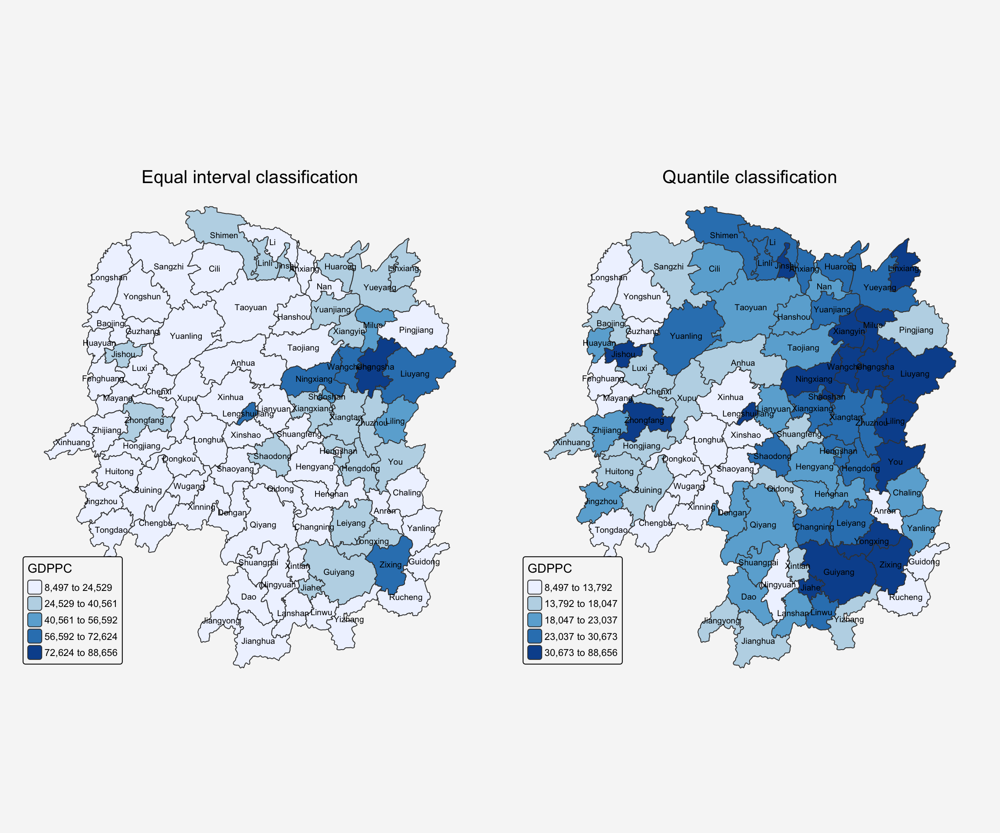
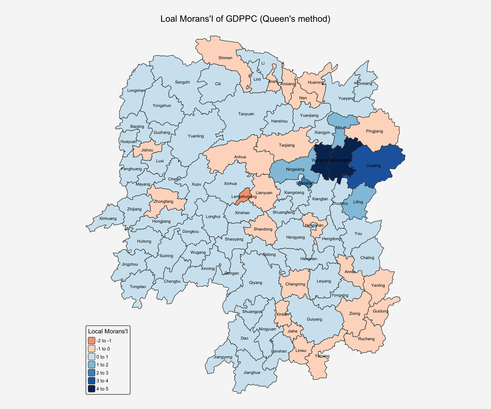
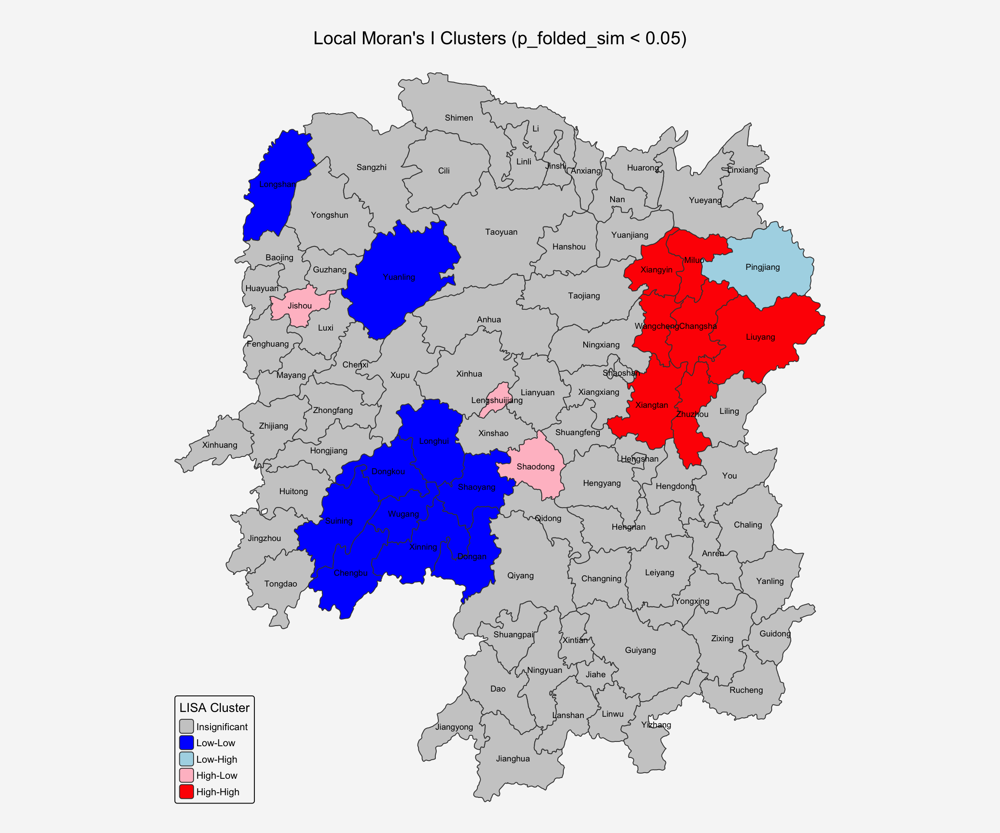
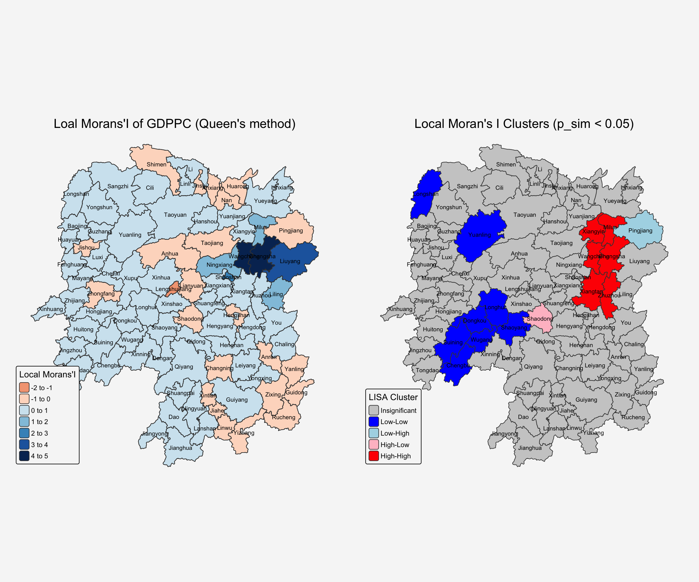
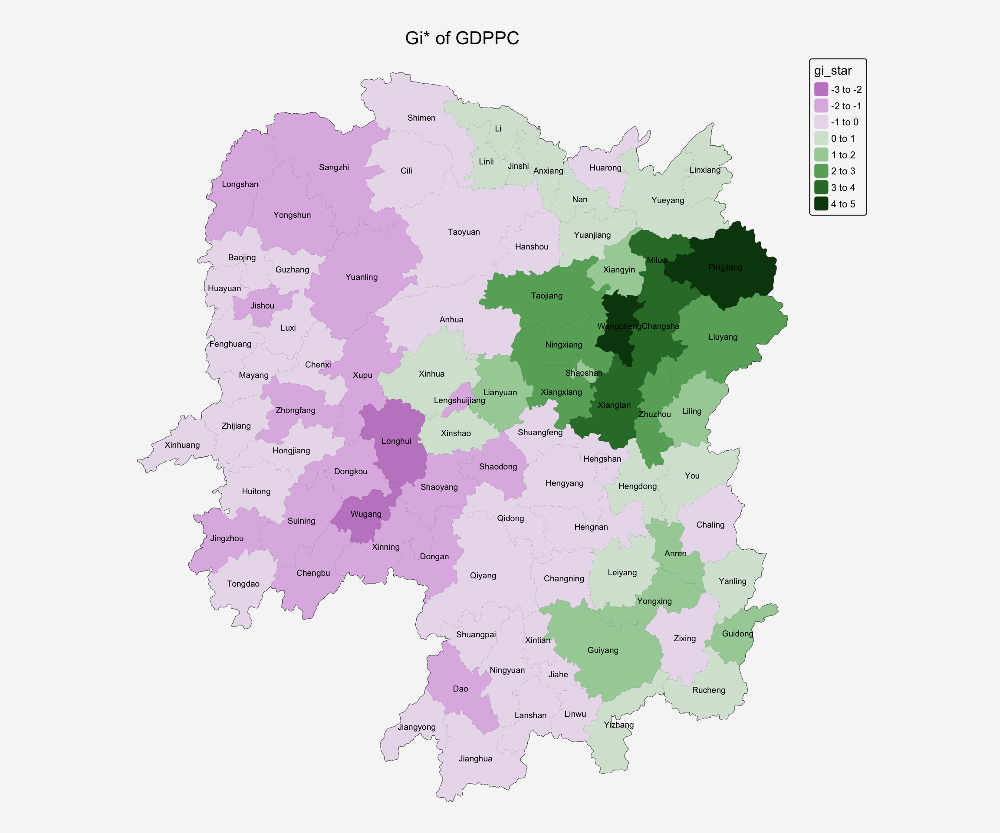
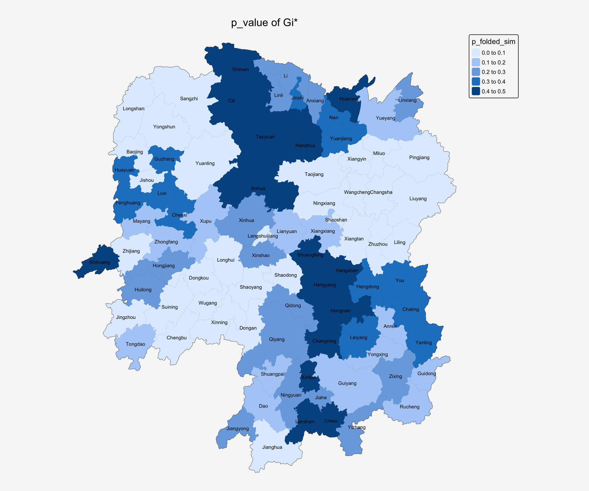
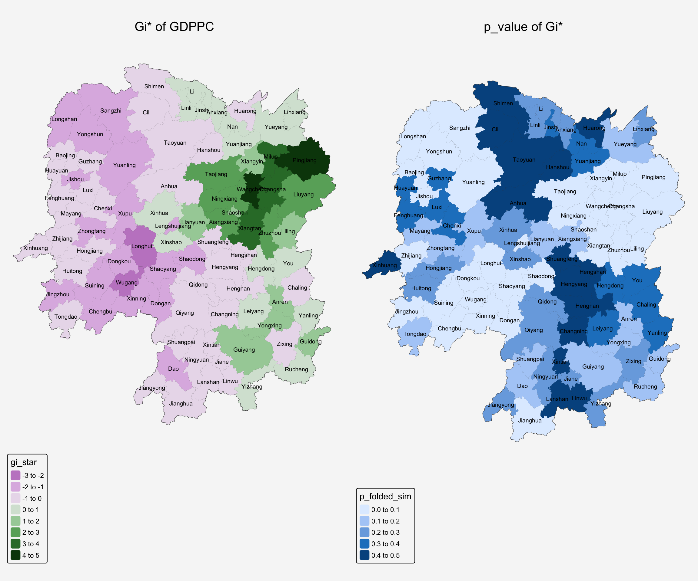
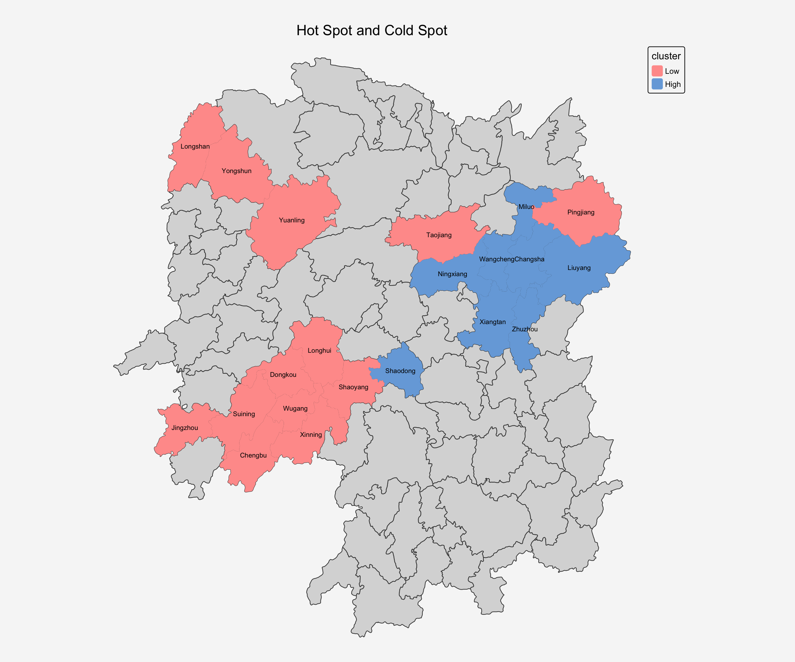

pacman::p_load(sf, tmap, tidyverse,knitr,sfdep,ggplot2,Kendall)In-class 5.a: Global Measures of Spatial Autocorrelation Using sfdep
1 Overview
In this hands-on exercise, we will learn how to compute Global Measures of Spatial Autocorrelation (GMSA) by using sfdep package.
1.1 spdep vs. sfdep
spdep is an R package widely used for spatial dependence, spatial autocorrelation, and spatial econometrics. It provides tools for creating spatial weights, calculating spatial autocorrelation statistics (like Moran’s I, Geary’s C), and running spatial regression models.
sfdep is a newer package designed to work with sf objects (simple features) in R. The sf package has become the modern standard for handling spatial vector data in R, replacing the older sp package. sfdep is meant to complement sf by providing spatial dependence tools that integrate more naturally with sf’s data structures.
2 Getting Started
2.1 Setting the Analytical Toolls
| Library | Desc |
|---|---|
| sf | handling geospatial data |
| tmap | visualization for geospatial data |
| tidyverse | handling data including packages readr, tidyr and dplyr |
| knitr | generate elegant, flexible, and fast dynamic report |
| spdep | create spatial weights matrix objects from polygon contiguities |
2.3 Getting the Data Into R Environment
In this section, we will learn how to bring a geospatial data and its associated attribute table into R environment. The geospatial data is in ESRI shapefile format and the attribute table is in csv fomat.
2.3.1 Import shapefile
The code chunk below uses st_read() of sf package to import Hunan shapefile into R. The imported shapefile will be simple features Object of sf.
hunan <- st_read(dsn = "data/geospatial",
layer = "Hunan") %>%
st_transform(crs = 32650)Reading layer `Hunan' from data source
`/Users/johsuan/johsuanh/ISSS626-GAA/In-class/In-class-Ex05/data/geospatial'
using driver `ESRI Shapefile'
Simple feature collection with 88 features and 7 fields
Geometry type: POLYGON
Dimension: XY
Bounding box: xmin: 108.7831 ymin: 24.6342 xmax: 114.2544 ymax: 30.12812
Geodetic CRS: WGS 84st_crs(hunan)Coordinate Reference System:
User input: EPSG:32650
wkt:
PROJCRS["WGS 84 / UTM zone 50N",
BASEGEOGCRS["WGS 84",
ENSEMBLE["World Geodetic System 1984 ensemble",
MEMBER["World Geodetic System 1984 (Transit)"],
MEMBER["World Geodetic System 1984 (G730)"],
MEMBER["World Geodetic System 1984 (G873)"],
MEMBER["World Geodetic System 1984 (G1150)"],
MEMBER["World Geodetic System 1984 (G1674)"],
MEMBER["World Geodetic System 1984 (G1762)"],
MEMBER["World Geodetic System 1984 (G2139)"],
MEMBER["World Geodetic System 1984 (G2296)"],
ELLIPSOID["WGS 84",6378137,298.257223563,
LENGTHUNIT["metre",1]],
ENSEMBLEACCURACY[2.0]],
PRIMEM["Greenwich",0,
ANGLEUNIT["degree",0.0174532925199433]],
ID["EPSG",4326]],
CONVERSION["UTM zone 50N",
METHOD["Transverse Mercator",
ID["EPSG",9807]],
PARAMETER["Latitude of natural origin",0,
ANGLEUNIT["degree",0.0174532925199433],
ID["EPSG",8801]],
PARAMETER["Longitude of natural origin",117,
ANGLEUNIT["degree",0.0174532925199433],
ID["EPSG",8802]],
PARAMETER["Scale factor at natural origin",0.9996,
SCALEUNIT["unity",1],
ID["EPSG",8805]],
PARAMETER["False easting",500000,
LENGTHUNIT["metre",1],
ID["EPSG",8806]],
PARAMETER["False northing",0,
LENGTHUNIT["metre",1],
ID["EPSG",8807]]],
CS[Cartesian,2],
AXIS["(E)",east,
ORDER[1],
LENGTHUNIT["metre",1]],
AXIS["(N)",north,
ORDER[2],
LENGTHUNIT["metre",1]],
USAGE[
SCOPE["Navigation and medium accuracy spatial referencing."],
AREA["Between 114°E and 120°E, northern hemisphere between equator and 84°N, onshore and offshore. Brunei. China. Hong Kong. Indonesia. Malaysia - East Malaysia - Sarawak. Mongolia. Philippines. Russian Federation. Taiwan."],
BBOX[0,114,84,120]],
ID["EPSG",32650]]After importing the shape file, let’s plot the graph:
par(bg="#f6f6f6")
plot(hunan)
2.3.2 Import CSV File
Next, we will import Hunan_2012.csv into R by using read_csv() of readr package. The output is R dataframe class.
hunan2012 <- read_csv("data/aspatial/Hunan_2012.csv")kable(head(hunan2012))| County | City | avg_wage | deposite | FAI | Gov_Rev | Gov_Exp | GDP | GDPPC | GIO | Loan | NIPCR | Bed | Emp | EmpR | EmpRT | Pri_Stu | Sec_Stu | Household | Household_R | NOIP | Pop_R | RSCG | Pop_T | Agri | Service | Disp_Inc | RORP | ROREmp |
|---|---|---|---|---|---|---|---|---|---|---|---|---|---|---|---|---|---|---|---|---|---|---|---|---|---|---|---|---|
| Anhua | Yiyang | 30544 | 10967.0 | 6831.7 | 456.72 | 2703.0 | 13225.0 | 14567 | 9276.9 | 3954.9 | 3528.3 | 2718 | 494.31 | 441.4 | 338.0 | 54.175 | 32.830 | 290.4 | 234.5 | 101 | 670.3 | 5760.60 | 910.8 | 4942.253 | 5414.5 | 12373 | 0.7359464 | 0.8929619 |
| Anren | Chenzhou | 28058 | 4598.9 | 6386.1 | 220.57 | 1454.7 | 4941.2 | 12761 | 4189.2 | 2555.3 | 3271.8 | 970 | 290.82 | 255.4 | 99.4 | 33.171 | 17.505 | 104.6 | 121.9 | 34 | 243.2 | 2386.40 | 388.7 | 2357.764 | 3814.1 | 16072 | 0.6256753 | 0.8782065 |
| Anxiang | Changde | 31935 | 5517.2 | 3541.0 | 243.64 | 1779.5 | 12482.0 | 23667 | 5108.9 | 2806.9 | 7693.7 | 1931 | 336.39 | 270.5 | 205.9 | 19.584 | 17.819 | 148.1 | 135.4 | 53 | 346.0 | 3957.90 | 528.3 | 4524.410 | 14100.0 | 16610 | 0.6549309 | 0.8041262 |
| Baojing | Hunan West | 30843 | 2250.0 | 1005.4 | 192.59 | 1379.1 | 4087.9 | 14563 | 3623.5 | 1253.7 | 4191.3 | 927 | 195.17 | 145.6 | 116.4 | 19.249 | 11.831 | 73.2 | 69.9 | 18 | 184.1 | 768.04 | 281.3 | 1118.561 | 541.8 | 13455 | 0.6544614 | 0.7460163 |
| Chaling | Zhuzhou | 31251 | 8241.4 | 6508.4 | 620.19 | 1947.0 | 11585.0 | 20078 | 9157.7 | 4287.4 | 3887.7 | 1449 | 330.29 | 299.0 | 154.0 | 33.906 | 20.548 | 148.7 | 139.4 | 106 | 301.6 | 4009.50 | 578.4 | 3793.550 | 5444.0 | 20461 | 0.5214385 | 0.9052651 |
| Changning | Hengyang | 28518 | 10860.0 | 7920.0 | 769.86 | 2631.6 | 19886.0 | 24418 | 37392.0 | 4242.8 | 9528.0 | 3605 | 548.61 | 415.1 | 273.7 | 81.831 | 44.485 | 211.2 | 211.7 | 115 | 448.2 | 5220.40 | 816.3 | 6430.782 | 13074.6 | 20868 | 0.5490628 | 0.7566395 |
2.3.3 Perform Relational Join
hunan_GDPPC <- left_join(hunan,hunan2012,
by = "County") %>%
select(1:4, 7, 15)
kable(head(hunan,5))| NAME_2 | ID_3 | NAME_3 | ENGTYPE_3 | Shape_Leng | Shape_Area | County | geometry |
|---|---|---|---|---|---|---|---|
| Changde | 21098 | Anxiang | County | 1.869074 | 0.1005619 | Anxiang | POLYGON ((22320.48 3301894,… |
| Changde | 21100 | Hanshou | County | 2.360691 | 0.1997875 | Hanshou | POLYGON ((35522.96 3230355,… |
| Changde | 21101 | Jinshi | County City | 1.425620 | 0.0530241 | Jinshi | POLYGON ((5120.127 3285521,… |
| Changde | 21102 | Li | County | 3.474324 | 0.1890812 | Li | POLYGON ((-43433.9 3326204,… |
| Changde | 21103 | Linli | County | 2.289506 | 0.1145036 | Linli | POLYGON ((-19307.27 3304609… |
class(hunan)[1] "sf" "data.frame"3 Visualize Regional Development Indicator
Now, we are going to prepare a basemap and a choropleth map showing the distribution of GDP Per Capita (GDPPC) 2012 by using tmap package:
equal <- tm_shape(hunan_GDPPC) +
tm_polygons(fill = "GDPPC",
fill.scale = tm_scale_intervals(
style = "equal",
n = 5,
values = "brewer.blues")) +
tm_text("NAME_3", size=0.6)+
tm_title("Equal interval classification",
position = tm_pos_out("center", "top", "center")) +
tm_layout(
legend.position = c("left", "bottom"),
bg.color = "#f6f6f6",
frame = FALSE)
quantile <- tm_shape(hunan_GDPPC) +
tm_polygons(fill = "GDPPC",
fill.scale = tm_scale_intervals(
style = "quantile",
n = 5,
values = "brewer.blues")) +
tm_text("NAME_3", size=0.6)+
tm_title("Quantile classification",
position = tm_pos_out("center", "top", "center")) +
tm_layout(
legend.position = c("left", "bottom"),
bg.color = "#f6f6f6",
frame = FALSE)
tmap_arrange(equal,
quantile,
asp=1,
ncol=2)
4 Global Measures of Spatial Autocorrelation
In this section, we will learn how to compute global spatial autocorrelation statistics and to perform spatial complete randomness test for global spatial autocorrelation.
4.1 Compute Contiguity Spatial Weights & Create Row-standardised Weights Matrix Using sfdep package
In the code chunk below, st_contiguity() of sfdep package is used to compute contiguity weight matrices for the study area. This function builds a neighbours list based on regions with contiguous boundaries. If you look at the documentation you will see that you can pass a “queen” argument that takes TRUE or FALSE as options. If you do not specify this argument the default is set to TRUE, that is, if you don’t specify queen = FALSE this function will return a list of first order neighbours using the Queen criteria.
Next, st_weights() is used to calculate polygon spatial weights from the nb list.
st_weights() provides three arguments, they are:
nb: A neighbor list object as created by
st_neighbors().style: Default “W” for row standardized weights. This value can also be “B”, “C”, “U”, “minmax”, and “S”. B is the basic binary coding, W is row standardised (sums over all links to n), C is globally standardised (sums over all links to n), U is equal to C divided by the number of neighbours (sums over all links to unity), while S is the variance-stabilizing coding scheme proposed by Tiefelsdorf et al. 1999, p. 167-168 (sums over all links to n).
allow_zero: If TRUE, assigns zero as lagged value to zone without neighbors.
wm_q <- hunan_GDPPC %>%
mutate(nb = st_contiguity(geometry),
wt = st_weights(nb, style = "W"),
.before = 1)
kable(head(wm_q))| nb | wt | NAME_2 | ID_3 | NAME_3 | ENGTYPE_3 | County | GDPPC | geometry |
|---|---|---|---|---|---|---|---|---|
| 2, 3, 4, 57, 85 | 0.2, 0.2, 0.2, 0.2, 0.2 | Changde | 21098 | Anxiang | County | Anxiang | 23667 | POLYGON ((22320.48 3301894,… |
| 1, 57, 58, 78, 85 | 0.2, 0.2, 0.2, 0.2, 0.2 | Changde | 21100 | Hanshou | County | Hanshou | 20981 | POLYGON ((35522.96 3230355,… |
| 1, 4, 5, 85 | 0.25, 0.25, 0.25, 0.25 | Changde | 21101 | Jinshi | County City | Jinshi | 34592 | POLYGON ((5120.127 3285521,… |
| 1, 3, 5, 6 | 0.25, 0.25, 0.25, 0.25 | Changde | 21102 | Li | County | Li | 24473 | POLYGON ((-43433.9 3326204,… |
| 3, 4, 6, 85 | 0.25, 0.25, 0.25, 0.25 | Changde | 21103 | Linli | County | Linli | 25554 | POLYGON ((-19307.27 3304609… |
| 4, 5, 69, 75, 85 | 0.2, 0.2, 0.2, 0.2, 0.2 | Changde | 21104 | Shimen | County | Shimen | 27137 | POLYGON ((-89888.78 3347561… |
The output is in df instead of the list form. If we use sdpep we need to use poly2nb() and nb2listw() to compute the spatial weights and create row-standardized matrix. However, using sfdep allows us to complete the tasks using the code above.
5 Global Measures of Spatial Autocorrelation: Moran’s I
In this section, we will learn how to perform Moran’s I statistics testing by using moran.test()of spdep.
Moran’s I quantifies the degree to which a variable at one location is similar to values at nearby locations. It measures global correlation, sensitive to overall clustering:
| Global Moran’s I Value | Meaning |
|---|---|
| I > 0 | Positive spatial autocorrelation (similar values cluster together) |
| I ≈ 0 | No spatial autocorrelation (random distribution) |
| I < 0 | Negative spatial autocorrelation (neighbors are dissimilar, dispersed pattern) |
Typical range is between –1 (perfect dispersion) and +1 (perfect clustering), though in practice the bounds depend on the weight matrix.
The arguments of moran.test() include:
| Argument | Description |
|---|---|
| randomisation | variance of I calculated under the assumption of randomisation, if FALSE normality |
| zero.policy | if attribute not set, use global option value; if TRUE assign zero to the lagged value of zones without neighbours, if FALSE assign NA |
| alternative | the alternative hypothesis, must be one of greater (default), less or two.sided. |
5.1 Computing Global Monte Carlo Moran’s I
set.seed(1234)- H0: GDP per capita values are randomly distributed across spatial units
- H1: GDP per capita values show positive spatial autocorrelation
- Significance level: α = 0.05
The default H1 is two-sided test.
global_moran_perm(wm_q$GDPPC,
wm_q$nb, # neighbor list object
wm_q$wt, # weights list
nsim=99) # 100 simulations
Monte-Carlo simulation of Moran I
data: x
weights: listw
number of simulations + 1: 100
statistic = 0.30075, observed rank = 100, p-value < 2.2e-16
alternative hypothesis: two.sided
Result Interpretation
The statistical report on previous tab shows that the p-value is smaller than alpha value of 0.05.
Hence, we have enough statistical evidence to reject the null hypothesis that the spatial distribution of GPD per capita are resemble random distribution (i.e. independent from spatial).
Because the Moran’s I statistics is greater than 0. We can infer that the spatial distribution shows sign of clustering.
6 Computing Local Moran’s I
set.seed(1234)lisa <- wm_q %>%
mutate(local_moran = local_moran(
GDPPC, nb, wt, nsim = 99),
.before = 1) %>%
unnest(local_moran)glimpse(lisa)Rows: 88
Columns: 21
$ ii <dbl> -1.468468e-03, 2.587817e-02, -1.198765e-02, 1.022468e-03,…
$ eii <dbl> 1.472724e-03, -1.337157e-02, 2.542108e-03, -9.522978e-05,…
$ var_ii <dbl> 5.187992e-04, 1.413972e-02, 1.109689e-01, 4.768012e-06, 1…
$ z_ii <dbl> -0.12912898, 0.33007787, -0.04361717, 0.51186518, 0.33919…
$ p_ii <dbl> 8.972556e-01, 7.413411e-01, 9.652096e-01, 6.087454e-01, 7…
$ p_ii_sim <dbl> 0.80, 0.98, 0.92, 0.56, 0.58, 0.86, 0.06, 0.12, 0.02, 0.2…
$ p_folded_sim <dbl> 0.40, 0.49, 0.46, 0.28, 0.29, 0.43, 0.03, 0.06, 0.01, 0.1…
$ skewness <dbl> -1.0560692, -1.0439328, 0.8429629, 0.8423923, 1.3810032, …
$ kurtosis <dbl> 1.31492710, 0.76654076, 0.12251048, 0.37514702, 2.3883407…
$ mean <fct> Low-High, Low-Low, High-Low, High-High, High-High, High-L…
$ median <fct> High-High, High-High, High-High, High-High, High-High, Hi…
$ pysal <fct> Low-High, Low-Low, High-Low, High-High, High-High, High-L…
$ nb <nb> <2, 3, 4, 57, 85>, <1, 57, 58, 78, 85>, <1, 4, 5, 85>, <1,…
$ wt <list> <0.2, 0.2, 0.2, 0.2, 0.2>, <0.2, 0.2, 0.2, 0.2, 0.2>, <0…
$ NAME_2 <chr> "Changde", "Changde", "Changde", "Changde", "Changde", "C…
$ ID_3 <int> 21098, 21100, 21101, 21102, 21103, 21104, 21109, 21110, 2…
$ NAME_3 <chr> "Anxiang", "Hanshou", "Jinshi", "Li", "Linli", "Shimen", …
$ ENGTYPE_3 <chr> "County", "County", "County City", "County", "County", "C…
$ County <chr> "Anxiang", "Hanshou", "Jinshi", "Li", "Linli", "Shimen", …
$ GDPPC <dbl> 23667, 20981, 34592, 24473, 25554, 27137, 63118, 62202, 7…
$ geometry <POLYGON [m]> POLYGON ((22320.48 3301894,..., POLYGON ((35522.9…ii.map <- tm_shape(lisa) +
tm_polygons(fill = "ii",
fill.scale = tm_scale_intervals(
style = "pretty",
n = 5,
values = "brewer.RdBu"),
fill.legend = tm_legend(
title = "Local Morans'I")) +
tm_borders(fill_alpha = 0.5) +
tm_text("NAME_3", size=0.6)+
tm_title("Loal Morans'I of GDPPC (Queen's method)",
position = tm_pos_out("center", "top", "center"))+
tm_layout(
legend.position = c("left", "bottom"),
bg.color = "#f6f6f6",
frame = FALSE)
ii.map
lisa <- lisa %>%
mutate(
LISA_cluster = ifelse(
p_folded_sim < 0.05,
as.character(mean),
"Insignificant"),
LISA_cluster = factor(
LISA_cluster,
levels = c("Insignificant", "Low-Low", "Low-High", "High-Low", "High-High") # by mean value
)
)7 LIAS Map
lisa_map <- tm_shape(lisa) +
tm_polygons(
fill = "LISA_cluster",
fill.scale = tm_scale_categorical(
values = c(
"grey80", # Insignificant
"blue", # Low-Low
"lightblue", # Low-High
"pink", # High-Low
"red" # High-High
)
),
fill.legend = tm_legend(
title = "LISA Cluster",
position = tm_pos_in("left", "bottom"))
) +
tm_text("NAME_3", size=0.6)+
tm_title("Local Moran's I Clusters (p_folded_sim < 0.05)",
position = tm_pos_out("center", "top", "center"))+
tm_layout(
bg.color = "#f6f6f6",
frame = FALSE)
lisa_map
tmap_arrange(ii.map, lisa_map, asp=1, ncol=2)
8 Hot Spot and Cold Spot Area Analysis (HCSA)
8.1 Compute local Gi* statisitics
building a spatial weight matrix
wm_idw <- hunan_GDPPC %>%
mutate(nb = include_self(
st_contiguity(geometry)),
wts = st_inverse_distance(nb,
geometry,
scale = 1,
alpha = 1),
.before = 1)set.seed(1234)
HCSA <- wm_idw %>%
mutate(local_Gi = local_gstar_perm(
GDPPC, nb, wts, nsim = 99),
.before =1) %>%
unnest(local_Gi)
HCSASimple feature collection with 88 features and 18 fields
Geometry type: POLYGON
Dimension: XY
Bounding box: xmin: -316283 ymin: 2735534 xmax: 230955.3 ymax: 3349137
Projected CRS: WGS 84 / UTM zone 50N
# A tibble: 88 × 19
gi_star cluster e_gi var_gi std_dev p_value p_sim p_folded_sim skewness
<dbl> <fct> <dbl> <dbl> <dbl> <dbl> <dbl> <dbl> <dbl>
1 0.263 Low 1.26e-6 1.88e-13 0.263 7.92e-1 0.58 0.29 1.67
2 -0.277 Low 1.04e-6 1.06e-13 -0.316 7.52e-1 1 0.5 0.969
3 0.00336 High 1.50e-6 2.92e-13 0.0145 9.88e-1 0.7 0.35 1.32
4 0.523 High 1.42e-6 2.49e-13 0.599 5.49e-1 0.42 0.21 1.47
5 0.461 High 1.36e-6 2.13e-13 0.493 6.22e-1 0.52 0.26 1.13
6 -0.427 High 9.80e-7 8.64e-14 -0.331 7.41e-1 0.84 0.42 1.31
7 2.95 High 6.57e-7 3.61e-14 3.47 5.13e-4 0.02 0.01 1.04
8 2.02 High 1.52e-6 1.14e-13 2.17 3.00e-2 0.08 0.04 0.652
9 4.41 High 1.28e-6 7.43e-14 5.41 6.44e-8 0.02 0.01 0.895
10 1.21 Low 1.78e-6 1.59e-13 1.25 2.11e-1 0.24 0.12 0.563
# ℹ 78 more rows
# ℹ 10 more variables: kurtosis <dbl>, nb <nb>, wts <list>, NAME_2 <chr>,
# ID_3 <int>, NAME_3 <chr>, ENGTYPE_3 <chr>, County <chr>, GDPPC <dbl>,
# geometry <POLYGON [m]>8.2 Visualize local HCSA
local_gi <- tm_shape(HCSA) +
tm_borders(alpha=0.8)+
tm_fill("gi_star") +
tm_text("NAME_3", size=0.6)+
tm_title("Gi* of GDPPC",
position = tm_pos_out("center", "top", "center"))+
tm_layout(
bg.color = "#f6f6f6",
frame = FALSE)
local_gi
p_sim_gi <- tm_shape(HCSA) +
tm_borders(alpha=0.8)+
tm_fill("p_folded_sim") +
tm_text("NAME_3", size=0.6)+
tm_title("p_value of Gi*",
position = tm_pos_out("center", "top", "center"))+
tm_layout(
bg.color = "#f6f6f6",
frame = FALSE)
p_sim_gi
tmap_arrange(local_gi,p_sim_gi)
8.3 Visualize hot spot and cold spot areas
HCSA_sig <- HCSA %>% filter(p_folded_sim <0.05)
HCSA_sigSimple feature collection with 21 features and 18 fields
Geometry type: POLYGON
Dimension: XY
Bounding box: xmin: -273154.1 ymin: 2889225 xmax: 230955.3 ymax: 3301534
Projected CRS: WGS 84 / UTM zone 50N
# A tibble: 21 × 19
gi_star cluster e_gi var_gi std_dev p_value p_sim p_folded_sim skewness
* <dbl> <fct> <dbl> <dbl> <dbl> <dbl> <dbl> <dbl> <dbl>
1 2.95 High 6.57e-7 3.61e-14 3.47 5.13e-4 0.02 0.01 1.04
2 2.02 High 1.52e-6 1.14e-13 2.17 3.00e-2 0.08 0.04 0.652
3 4.41 High 1.28e-6 7.43e-14 5.41 6.44e-8 0.02 0.01 0.895
4 -1.18 Low 6.91e-7 5.57e-14 -1.19 2.35e-1 0.08 0.04 1.22
5 -1.83 Low 1.16e-6 6.04e-14 -1.81 7.09e-2 0.02 0.01 0.532
6 -1.46 Low 8.20e-7 7.29e-14 -1.43 1.52e-1 0.08 0.04 0.648
7 -1.64 Low 1.14e-6 1.37e-13 -1.43 1.51e-1 0.02 0.01 1.56
8 -2.02 Low 1.21e-6 7.29e-14 -2.20 2.76e-2 0.02 0.01 1.06
9 -1.50 High 1.32e-6 1.06e-13 -1.52 1.27e-1 0.08 0.04 0.548
10 -1.86 Low 1.44e-6 1.19e-13 -1.77 7.72e-2 0.02 0.01 0.818
# ℹ 11 more rows
# ℹ 10 more variables: kurtosis <dbl>, nb <nb>, wts <list>, NAME_2 <chr>,
# ID_3 <int>, NAME_3 <chr>, ENGTYPE_3 <chr>, County <chr>, GDPPC <dbl>,
# geometry <POLYGON [m]>Low clusters are cold spots with locations having high values and surrounded by other low values.
tm_shape(HCSA) +
tm_polygons()+
tm_shape(HCSA_sig)+
tm_fill("cluster") +
tm_text("NAME_3", size=0.6)+
tm_title("Hot Spot and Cold Spot",
position = tm_pos_out("center", "top", "center"))+
tm_layout(
bg.color = "#f6f6f6",
frame = FALSE)
9 Local Moran’s I & Gi* Comparison
Local Moran’s I tells you if a location is similar to or different from its neighbors, while Gi* tells you if there’s a concentration of high or low values in an area.
| Aspect | Local Moran’s I (LISA) | Gi* |
|---|---|---|
| What it measures | Similarity between a location and its neighbors | Intensity of clustering (concentration of high or low values) |
| Output types | Four categories: High-High, Low-Low, High-Low, Low-High | Two categories: Hot spots (positive z-scores), Cold spots (negative z-scores) |
| Detects clusters | Yes (HH and LL) | Yes (HH and LL) |
| Detects outliers | Yes (HL and LH) | No |
| Statistical output | Local Moran’s I statistic + p-value | Z-score + p-value |
| Interpretation | Identifies both conformity and deviation from neighbors | Identifies areas with statistically significant concentration of values |
| Null hypothesis | No local spatial association | Random spatial distribution |
| Value range | Can be positive or negative | Z-scores (typically -3 to +3) |
| Includes focal value | No (compares focal location to neighbors only) | Yes (includes the location itself in calculation) |
| Best for | Finding spatial anomalies, gentrification patterns, unusual crime patterns | Disease surveillance, identifying service deserts, retail site selection |
| Visualization | Typically shown as categorical maps (4 colors) | Typically shown as continuous gradient or confidence intervals |
| Sensitivity to outliers | More sensitive (by design) | Less sensitive |